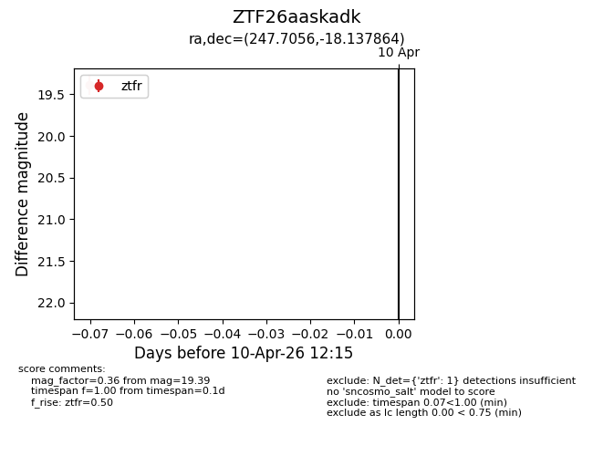
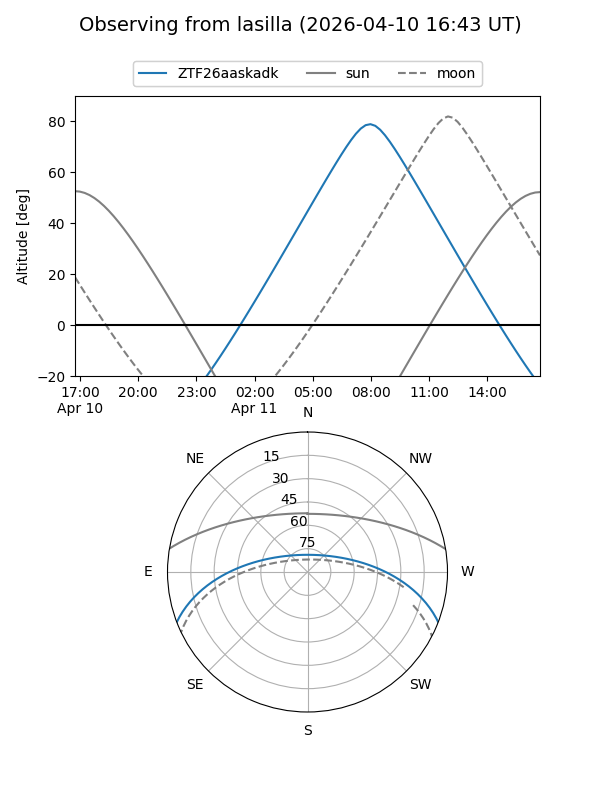
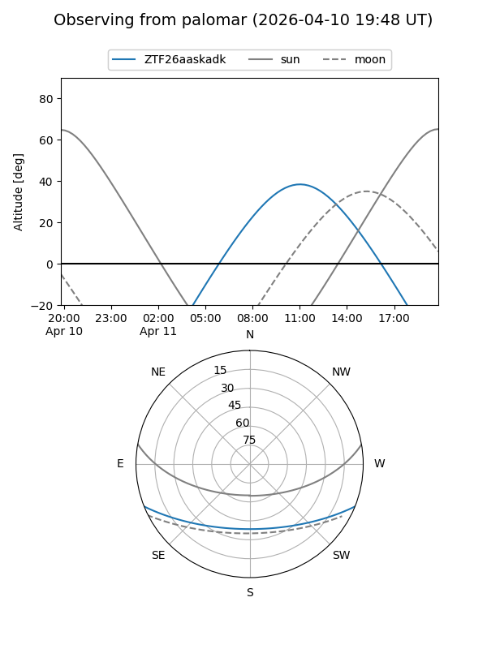

ZTF26aaskadk
Target ZTF26aaskadk at 2026-04-10 12:25
Aliases and brokers:
FINK: link
Lasair: link
ALeRCE: link
alt names
ZTF26aaskadk (ztf,fink_ztf)
Coordinates:
equatorial (ra, dec) = 247.7056,-18.13786
equatorial (HMS+DMS) = 16:30:49.35,-18:08:16.31
galactic (l, b) = (358.8067,+20.18299)
Flags:
Photometry:
last ztfr=19.39
1 ztfr detections
Lightcurve

Visibility


Additional plots